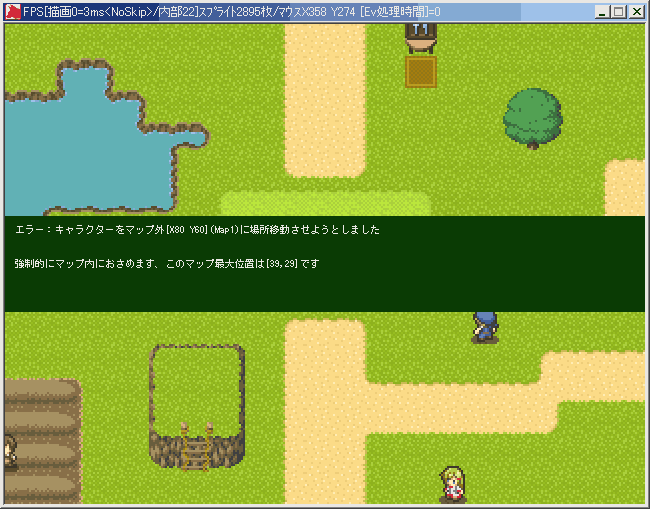
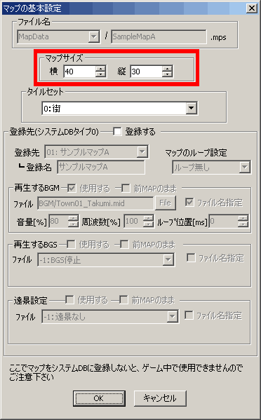
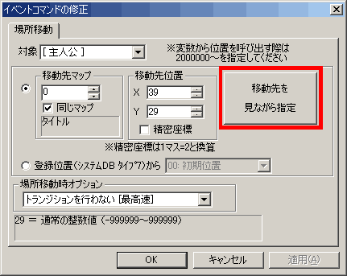

| 【事象】 あるマップから別のマップへ移動するときに「場所移動」コマンドを使用します。 ですが、「マップの最大座標は…です」なんてエラーに遭遇することがあるでしょう。 今回はこの現象の解決方法を説明いたします。 場所移動については、「◆主人公を別のマップに移動させたい」を参照してください。 基本中の基本なので、必ず習得しましょう。 具体的には、場所移動コマンドで、移動先の座標を、そのマップの大きさを超える数値にしてしまうと発生します。 例えば、「サンプルマップA」のマップの大きさは「横40、縦30」です。このときの最大座標は「39,29」となります。 ここで場所移動コマンドにて、移動先の座標を「40,30」と指定してしまうと、 そこはマップの外になってしまい、移動ができずエラーになります。 なお、エラーが出た場合、移動先は強制的にマップに収まる位置になります。 |
 こんなエラーですね |
| 【解決】 移動先をマップのサイズに収まるように設定します スパナのアイコンをクリックして出てくるマップの設定項目で、移動先のマップの大きさを調べましょう。 その大きさ-1が、マップで移動できる最大の座標です。 そこに収まるように座標を指定してやれば、エラーを回避できます。 |
 これですね |
| ◆より確実な予防方法 場所移動設定時に「移動先を見ながら指定」を使うと、 移動先のマップを表示して、そこから移動したい点を指定できるので、 確実にマップの大きさに収まる点を指定できます。 |
 ここですね、この機能の有難みといったらもう… |
| ◆場所移動今昔物語 Ver1.11までは、「マップを見ながら場所移動指定」なんてものはありませんでした。 単純に「移動先のマップ」と「移動先の座標」を指定して場所移動を行っていました。 そのため、このエラーは現在より頻発していたことと思われます。 Ver1.12以降でも、移動先を指定するとき、変数を使っている場合は、このエラーに遭遇することがありましょう。 もしエラーが出た場合は、もう一度、その処理を行っている部分を見直してください。 意図しない値が入っていることがあります。 このケースについては、マップの大きさ(変数操作+で取得できます)を利用するなどして、 変数に入る値が、場所移動できる範囲を超えないようにするしかありません。 ケースバイケースですので、状況に応じて手を打ってください。 他にも、移動先のマップのサイズを変更したのに、場所移動イベントの方で 移動先の変更を忘れたときにも発生しえます。 マップのサイズを変えたときは、関連するイベントを一度点検しなおしましょう。 |
＜＜執筆者：ウディタ公式ガイド執筆コミュ。＞＞